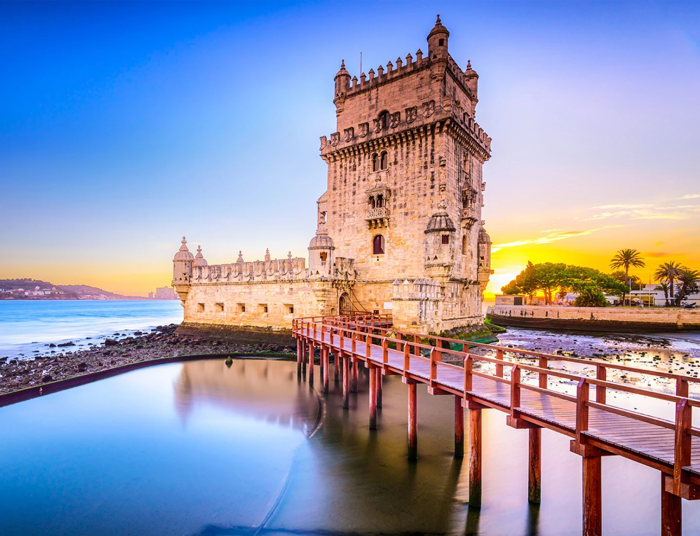

Lisboa é a capital de Portugal, famosa pela sua luz única, história rica, bairros típicos e gastronomia inesquecível.
Dica de viagem: A melhor forma de explorar os bairros históricos de Alfama e da Bica é a pé ou a bordo do tradicional elétrico 28.
Para mais informações oficiais sobre turismo, visita o Portal Oficial Visit Lisboa.
